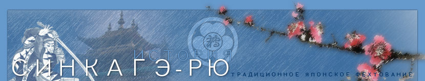

 |

Дерево в обхват рождается из ростка, башня в девять ярусов поднимается из кучки земли, путь в тысячу ли начинается под ногами...
Синкагэ-рю, одна из древнейших школ фехтования мечом Японии, была основана в «эпоху воюющих царств» в середине 16 века Камиизуми Исэ-но ками Хидэцуна (фото). Пройдя обучение в трех школах, называемых истоками японского кэн-дзюцу – Нэн-рю, Катори синто-рю и Кагэ-рю (последней уделялось наибольшее внимание), Исэ-но ками усовершенствует и развивает полученные знания, ставя в основу техник школы принцип «маробаси», в результате чего появляется Синкагэ-рю («Новая школа Кагэ»). Участвуя в многочисленных сражениях, Исэ-но ками на деле доказал эффективность созданной им школы, ставшей в последствии чрезвычайно популярной в средневековой Японии. Лучшие представители школы – семья Ягью – служили преподавателями фехтования в семье сёгунов Токугава, другие же, пройдя обучение в Синкагэ-рю, в последствии основали собственные школы.
В начале 20 века Синкагэ-рю была на грани гибели и только благодаря отдельной группе людей школа продолжила свое существование. Теперешний руководитель школы Ватанабэ Тадасигэ возглавил Синкагэ-рю в 1969 году и образовал международную ассоциацию Синкагэ-рю Хёхо Маробасикай. Цель ассоциации – сохранение традиций школы и распространение учения Синкагэ-рю. Усилия Ватанабэ-сэнсэя не пропали даром, интерес к технике этой древней школы заметно возрос во многих странах. На сегодняшний день филиалы Синкагэ-рю Хёхо Маробасикай существуют в Японии и во многих других странах мира, а в 1993 году был основан и Российский филиал - Синкагэ-рю Хёхо Росиа Маробасикай, к которому относится и наше Нижегородское отделение. В 2013 году господин Ватанабэ Тадасигэ посетил Москву и провел показательную тренировку (эмбу тайкай) в честь двадцатилетия школы в России.